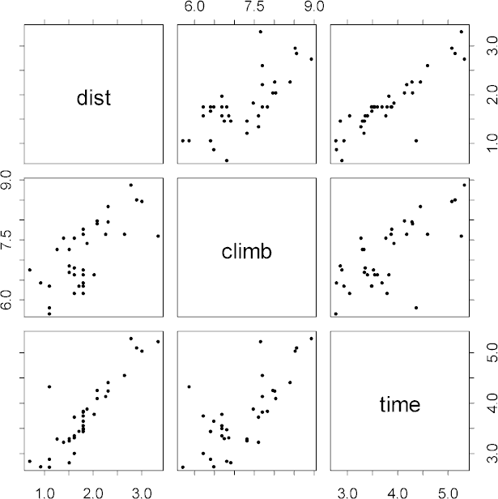

| / Home |
Keywords: multiple regression, transformation, influence, outliers
The data give the record-winning times for 35 hill races in Scotland, as reported by Atkinson (1986). The distance travelled and the height climbed in each race is also given. The data contains a known error - Atkinson (1986) reports that the record for Knock Hill (observation 18) should actually be 18 minutes rather than 78 minutes.
| Variable | Description | ||
| Race | Name of race | ||
| Distance | Distance covered in miles | ||
| Climb | Elevation climbed during race in feet | ||
| Time | Record time for race in minutes | ||
Data File (tab-delimited text)
| Atkinson, A. C. (1986). Comment: Aspects of diagonistic regression analysis (discussion of paper by Chatterjee and Hadi). Statistical Science, 1, 397-402. |
| Staudte, R. G., and Sheather, S. J. (1990). Robust Estimation and Testing. Wiley, New York, page 265. |
| Hadi, A. S. (1992). A new measure of overall potential influence in linear regression. Computational Statistics and Data Analysis, 14, 1-27. |
| Ryan, T. P. (1997). Modern Regression Methods. Wiley, New York, Pages 480-482. |
The data has been used to illustrate outliers. Some authors have suggested there is more than one outlier. Ryan suggests that with nonlinear dependence on Climb, there is only one outlier.
> pairs(log(hills))

|
Home - About Us -
Contact Us Copyright © Gordon Smyth |